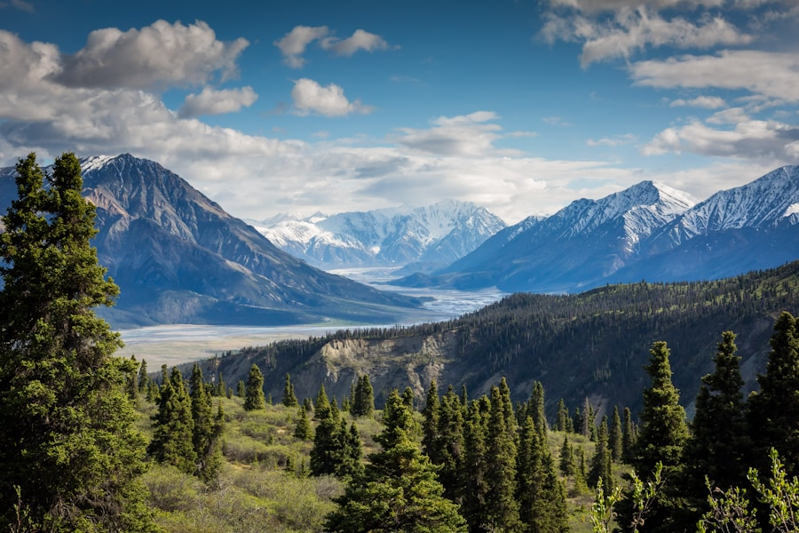
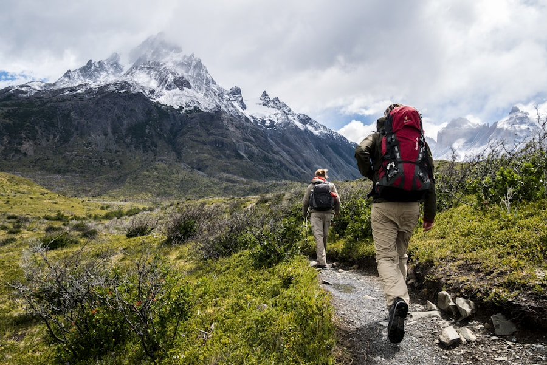

Randonnées pour grizzlys
Dans les Alpes, la solitude n’est pas un manque — c’est la destination. Des itinéraires choisis pour leur silence, pas pour leurs foules.


La philosophie
Le concept des Randonnées pour grizzlys et autres animaux solitaires est simple : certains randonneurs cherchent la compagnie, d’autres cherchent à s’en éloigner. Cette série s’adresse aux seconds.
Chaque itinéraire est choisi non seulement pour ses paysages ou son intérêt technique, mais pour la quasi-certitude de marcher seul. L’expérience du silence en montagne — aucune voix, aucun bâton qui claque, personne pour demander combien il reste jusqu’au sommet — est considérée comme partie intégrante de l’itinéraire.
Comme l’écrivait Nicolas Bouvier, la lenteur est un luxe suprême. Ces guides sont construits autour de cette idée : de longues journées, des retours tardifs, des repas sans hâte.
Les livres
Deux volumes publiés aux Éditions Slatkine, Genève. Chacun présente 25 itinéraires notés selon un index grizzly — une mesure de la tranquillité attendue sur le sentier, de quelques passants occasionnels à une véritable solitude.

25 itinéraires dans les Alpes valaisannes et la Vallée d’Aoste, sélectionnés pour leur solitude. Chaque randonnée comprend point de départ, difficulté, durée, profil altimétrique et extraits de carte. L’index grizzly évalue la tranquillité attendue sur chaque sentier — de calme à véritablement désert.
Voir sur slatkine.com →
Un second volume couvrant les Alpes et préalpes vaudoises, fribourgeoises et bernoises. Encore 25 itinéraires avec index grizzly, des stratégies pour maximiser vos chances de silence en montagne et des conseils pratiques pour planifier vos randonnées solitaires.
Voir sur slatkine.com →